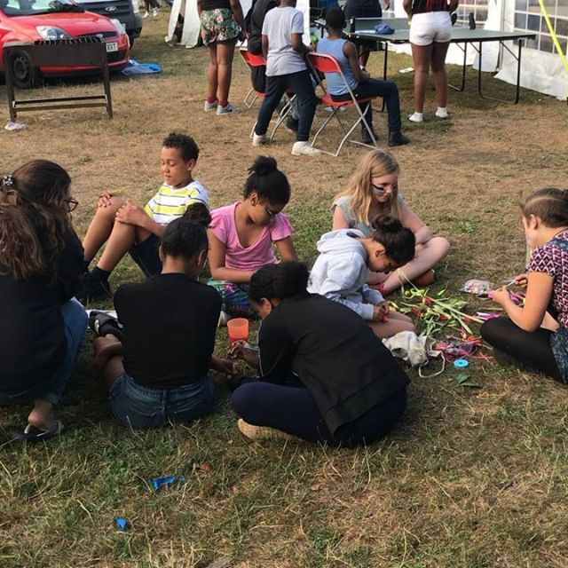

Problem:
Islington lacks interesting, engaging, open, free spaces for young people to spend their time outside. In certain instances, young people become entrenched in gang culture and unwilling to move into new, unfamiliar spaces because of shyness, wariness, or safety issues.


What we offer:
Our Street Teams exist to make sure young people are safe and well, wherever they are. If they’d rather not come to the centre, our staff check in on them in their local area. This builds a mutual trust and allows positive relationships to be formed. Our team become familiar faces, and get to know the wider community as well as the young people themselves.
Being a visible presence on the streets and building relationship with young people in public also helps dispel the myth that young people aren’t approachable, or are out to cause trouble. Our teams has been able to diffuse volatile situations on the streets amongst young people and their communities. Early interventions like this help improve relationships amongst different groups and generations in the areas we work in, as well as the young people themselves.
Outcomes:
Our joint Street Team’s work has reduced antisocial behavior and the criminalisation of young people in the geographical areas we cover. Whilst that is the main focus of our outreach programme, we have also helped young people back into work, education and apprenticeships, and also provided access to sex and relationships advice and condoms through the Come Direct Scheme. We witness many young people overcome barriers to achieve real successes in their lives.
For example, Barry who was in constant trouble with the police while at school, was supported by our Street Team and through our one to one work, now owns his own plumbing business and has a stable family.

